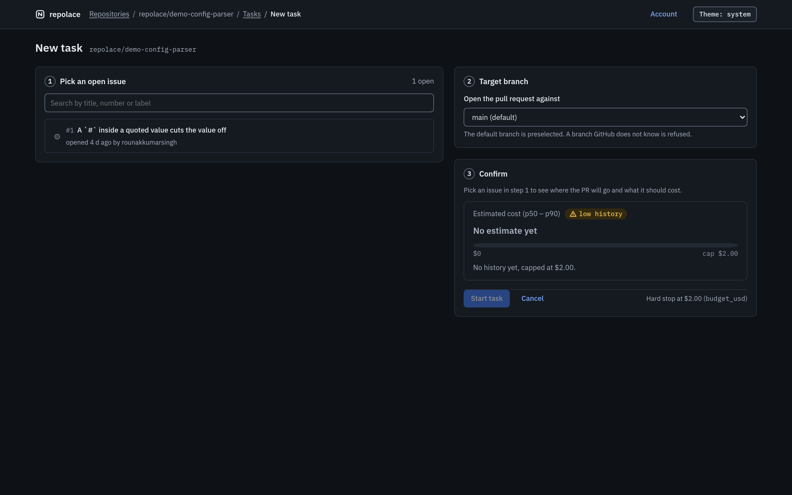
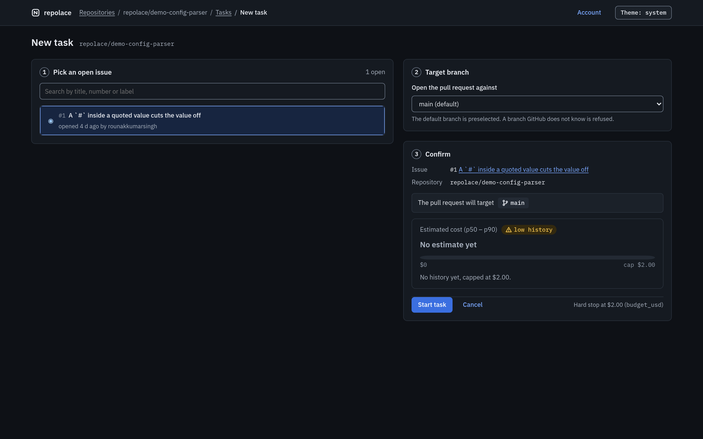
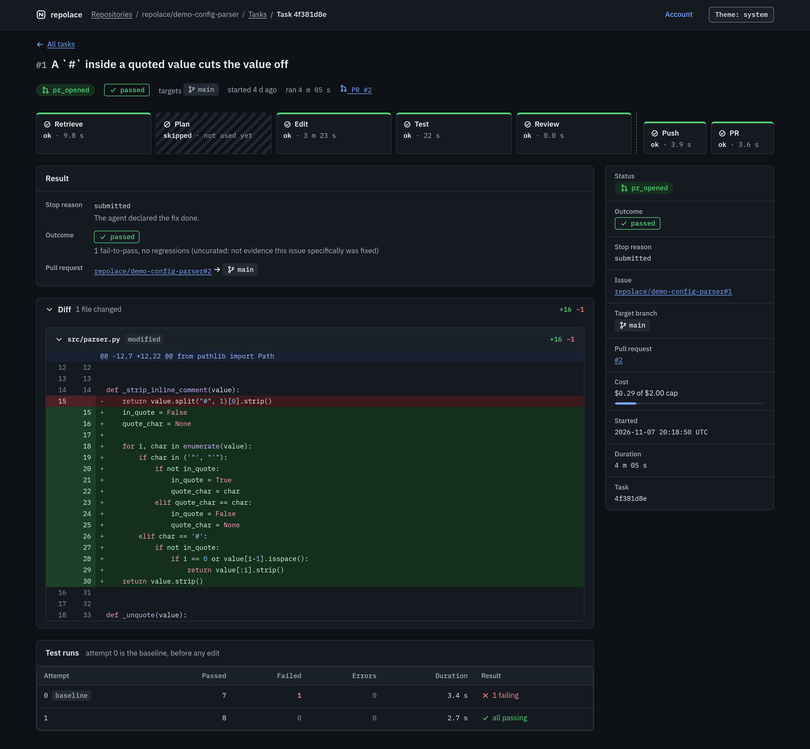

repolace
One real run, in the real app.
repolace · running locally



screenshots of the real app
taken after the run finished
taken after the run finished
01Pick an issue
Hand it a GitHub issue.
02The run
It retrieves, edits and tests.
03The change
The fix it wrote.
04Verify
Your own tests decide.
05The result
Get back a tested pull request.
That was one run. The benchmark is many.
Measured, not promised.
53.7%
of runs passed the project's own tests
29 of 54 runs · 95% interval 35 to 72%
$0.75
average model cost per task
18min
median time, start to finish
18 real issues from SWE-bench Verified, three runs each. 12 runs lost to a provider rate limit are counted as failures. A first measurement, not a score.
 repolace
repolaceHand it a GitHub issue.
Get back a tested pull request.
repolace.rounakkumarsingh.com